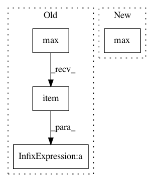

7c41e2eee4ff49865ea9fc2fc94fe91a68cb4807,torch_geometric/datasets/icews.py,TemporalDataset,num_rels,#TemporalDataset#,35
Before Change
if hasattr(self, "_num_rels"):
return self._num_rels
ps = self.processed_paths
rs = [torch.load(path)[0].edge_attr.max().item() + 1 for path in ps]
self._num_rels = max(rs)
return self._num_rels
After Change
@property
def num_rels(self):
return self.data.edge_type.max().item() + 1
@property
def raw_file_names(self):
In pattern: SUPERPATTERN
Frequency: 3
Non-data size: 4
Instances
Project Name: rusty1s/pytorch_geometric
Commit Name: 7c41e2eee4ff49865ea9fc2fc94fe91a68cb4807
Time: 2019-04-12
Author: matthias.fey@tu-dortmund.de
File Name: torch_geometric/datasets/icews.py
Class Name: TemporalDataset
Method Name: num_rels
Project Name: pytorch/audio
Commit Name: 4e99c12dc0ec327e5eb5b91a21f6d6b055bee991
Time: 2021-02-04
Author: toastedjcaw@gmail.com
File Name: torchaudio/functional/functional.py
Class Name:
Method Name: amplitude_to_DB
Project Name: rusty1s/pytorch_geometric
Commit Name: c49bd59c7d43af4a3baadbfe17d6d77a6a6040fd
Time: 2020-03-25
Author: matthias.fey@tu-dortmund.de
File Name: torch_geometric/datasets/particle.py
Class Name: TrackingData
Method Name: __inc__